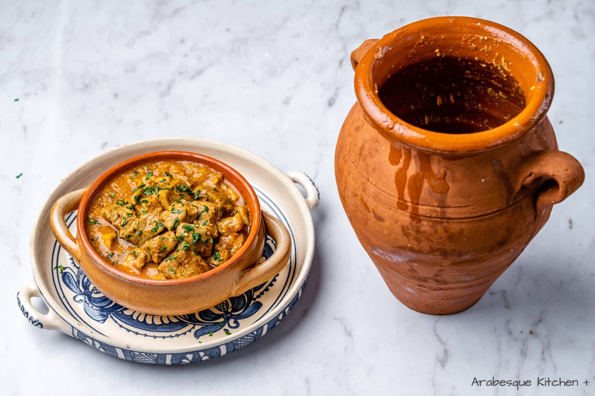

Tanjia Marrakchia

Tanjia Marrakchia: A Culinary Gem at the Heart of Marrakech
Tanjia Marrakchia is a simple, hearty stew traditionally slow-cooked in a clay pot in the ashes of a hammam fire. Known as the go-to meal for Marrakech's bachelors, this dish is easily recreated at home with a Dutch oven or casserole, bringing a taste of Moroccan tradition to your table.
Ingredients
For the Meat:
- 2 kg lamb, or beef, cut into small or medium size pieces
- 1 medium onion, chopped
- 6 to 8 cloves garlic, chopped
- 1 large handful fresh parsley, or cilantro, chopped
- 2 teaspoons ras el hanout
- 2 teaspoons cumin
- 1 1/4 teaspoons salt
- 1 teaspoon saffron threads, heated gently and crumbled
- 1 teaspoon turmeric
- 1 teaspoon ginger
- 1/2 teaspoon freshly ground black pepper
- 1/2 teaspoon freshly ground white pepper
- 1/2 preserved lemon rind, finely chopped
- 1/2 preserved lemon, cut into wedges
- 1/4 cup olive oil
- 1/4 cup water
Steps to Make It
- Gather the ingredients.
- Mix the meat with the onion, garlic, parsley or cilantro, spices, and chopped preserved lemon rind. Transfer the seasoned meat mixture to the tangia (or another deep ovenproof cooking dish). Add the olive oil, or smen (salted fermented butter—if using), preserved lemon wedges and water.
- Cover the top of the tangia with a circle of parchment paper (it should be cut a little larger than the diameter of the opening). Cover the parchment paper with a layer of aluminum foil, wrapping and sealing the foil snugly to the tangia. Pierce the foil and parchment paper in 2 or 3 places with a fork.
- Place the tangia in a cold oven, set the thermostat to 275 F/140 C, and turn the oven on. Leave the tangia for 5 to 6 hours, at which time you can check to see if the meat is adequately cooked. It should fall off the bone and be buttery-tender.
- Serve the tangia on a large communal platter with Moroccan bread (khobz) for scooping up the meat and sauce.